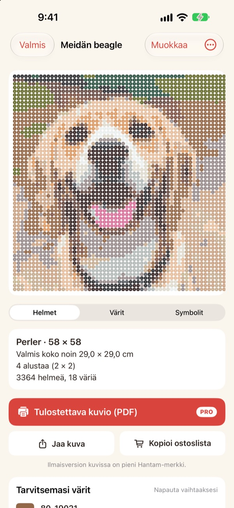
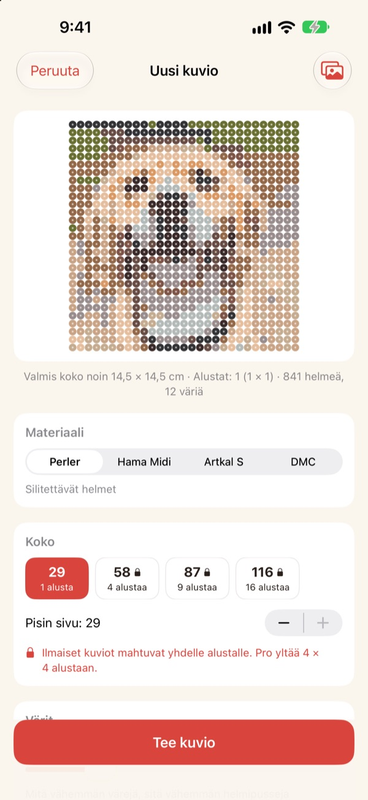
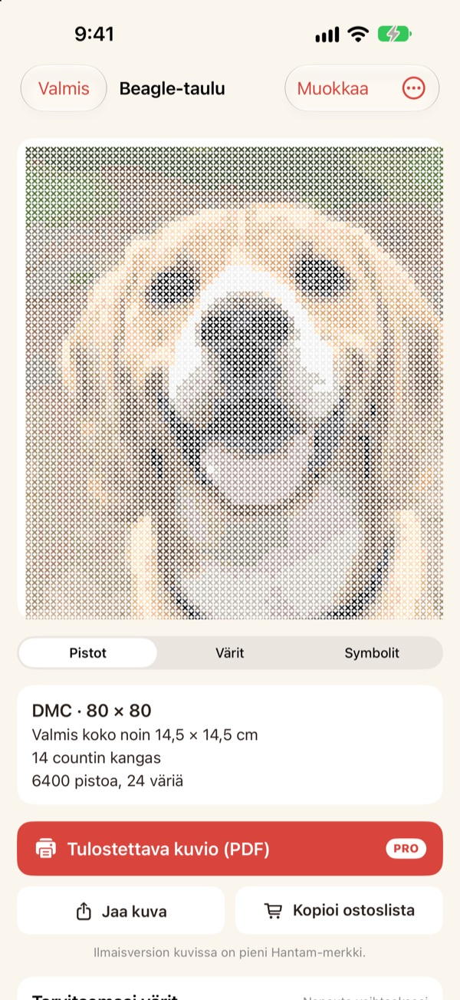
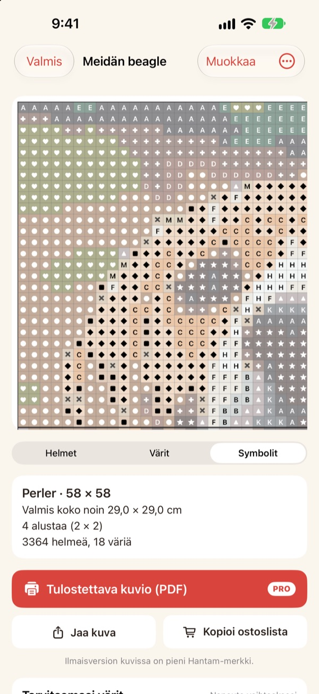
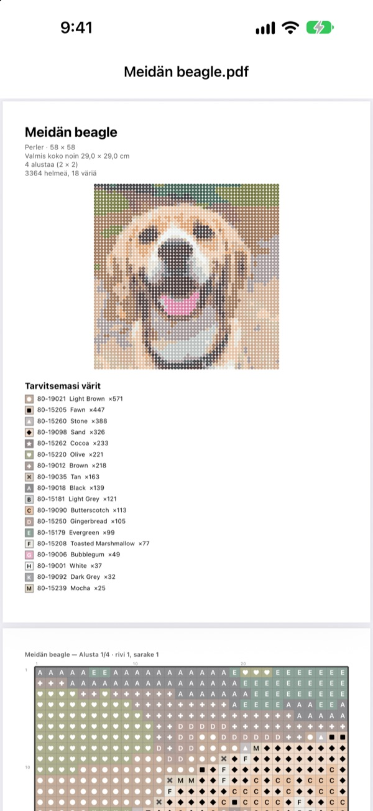

Yhdestä kuvasta
syntyy kuvio
Valitse kuva lemmikistäsi, itsestäsi tai lempihahmostasi. Hantam tekee siitä kuvion silitettäville helmille tai ristipistoille väreillä, joita voit ostaa.
Yhden alustan kuviot ovat ilmaisia. Kuvat eivät lähde iPhonestasi.

Kokeile kuvalla
Sama värien sovitus kuin sovelluksessa, Perlerin oikealla värikartalla. Vaihda kokoa ja värien määrää tai kokeile omalla kuvallasi.
Kuvion tekeminen on helppoa. Oikeiden helmivärien löytäminen ei
Jos pikselöit kuvan millä tahansa kuvankäsittelyohjelmalla, tulee värejä, joita ei ole yhdessäkään helmessä tai langassa. Sitten pitää arvata, mistä purkista kukin ruutu tulee, ja laskea, montako mitäkin ostaa. Hantam valitsee vain myynnissä olevista väreistä ja kertoo tarkalleen, montako tarvitset.
Oikeat värit, oikeat numerot
Valitse Perler-, Hama Midi- tai Artkal S -helmet tai DMC-lanka. Jokainen ruutu saa värin, jota merkki oikeasti myy, numeroineen.
Koon ja värien määrän päätät itse. Isot kuviot jaetaan 29 × 29 -alustoihin.

Myös ristipistot
Valitse DMC-lanka, niin samasta kuvasta tulee ristipistokuvio. Valitse Aida-kangas 11, 14, 16 tai 18, niin Hantam näyttää valmiin koon ja pistojen määrän väreittäin.

Tiedät tarkalleen, mitä ostaa
Vaihda symbolikuvioon ja etene ruutu kerrallaan. Jokaisen alustan reuna tai joka 10. pisto on merkitty paksulla viivalla. Näet, montako helmeä kukin väri vaatii, ja Kopioi ostoslista hoituu yhdellä napautuksella.
Napauta ruutua muuttaaksesi sitä tai vaihda yksi väri toiseen koko kuviossa.

Tulosta ja aloita
Prolla viet ulos Tulostettava kuvio (PDF): ensin värilista, sitten symbolikuviot alusta kerrallaan.

Kuvioon kolmessa vaiheessa
- 1
Valitse kuva
Lemmikit, kasvot, logot ja hahmot käyvät. Selkeän pääkohteen kuvat onnistuvat parhaiten.
- 2
Valitse helmet tai lanka
Päätä merkki, koko ja värien määrä.
- 3
Tee se
Seuraa kuviota näytöltä tai tulosta se Prolla.
Materiaalit ja koot
- Perler · Hama Midi · Artkal S
- Silitettävät helmet, 29 × 29 -alustat, helmi noin 5 mm
- DMC
- Ristipistolanka Aida-kankaalle 11, 14, 16 tai 18
- Ilmainen
- Helmet 1 alustaan asti (29 ruutua), lanka 40 pistoon asti pidemmällä sivulla
- Pro
- Helmet 4 × 4 alustaan asti (116 ruutua), lanka 200 pistoon asti
- Värit
- 2–50 yhdessä kuviossa
Perler, Hama, Artkal ja DMC ovat omistajiensa tavaramerkkejä. Hantam ei liity niihin. Näytön värit voivat erota hieman todellisista.
Aloita ilmaiseksi. Isot kuviot ja tulostus Prolla.
Ilmainen
- Kuviot yhteen alustaan tai 40 pistoon asti
- Kaikki merkit: Perler, Hama, Artkal ja DMC
- Määrät väreittäin, ostoslista ja värien vaihto
- Enintään 3 tallennettua kuviota
- Kuvien jakaminen pienellä Hantam-merkillä
Hantam Pro
- Tulostettavat PDF-kuviot
- Enintään 4 × 4 alustaa tai 200 pistoa
- Rajattomasti tallennettuja kuvioita
- Kuvat ilman merkkiä
- Kaikki pikselitaidetyökalut
Kuukausi- tai vuositilaus tai kertaostos loppuiäksi
Voit myös antaa Pron lahjaksi ystävälle suoraan sovelluksesta.
Usein kysyttyä
Ladataanko kuvani jonnekin?
Ei. Kuvat ja kuviot käsitellään ja tallennetaan vain iPhonellesi.
Värit näyttävät vähän erilaisilta kuin helmeni.
Näyttö näyttää värit eri tavalla kuin muovi ja lanka. Napauta väriä listassa ja vaihda se saman merkin lähempään sävyyn.
Kuinka iso kuvio voi olla?
Ilmaisena yksi 29 × 29 -alusta tai 40 pistoa pidemmällä sivulla. Prolla enintään 4 × 4 alustaa (116 helmeä) tai 200 pistoa.
Millaiset kuvat onnistuvat parhaiten?
Kuvat, joissa on yksi kohde ja yksinkertainen tausta. Mitä vähemmän värejä, sitä siistimpi kuvio, joten jos tulos näyttää levottomalta, vähennä värejä.
Voinko yhä tehdä pikselitaidetta?
Voit. Kuvien pikselöinti, piirtäminen 110 mallin mukaan ja animointi ruutu ruudulta ovat yhä mukana. Kaikki pikselitaidetyökalut kuuluvat Prohon.
Miten palautan ostokseni?
Avaa sovelluksen asetukset ja napauta Palauta ostokset. Käytä samaa Apple-tiliä, jolla ostit Pron.
Miten peruutan tilauksen?
Avaa iPhonen Asetukset › oma nimesi › Tilaukset ja valitse Hantam. Elinikäinen käyttö on kertamaksu eikä uusiudu.
Miten ilmoitan virheestä tai ehdotan ideaa?
Nopeinta on lähettää palautetta sovelluksen asetuksista. Voit myös kirjoittaa alla olevaan osoitteeseen tai lähettää viestin Instagramissa (@lee25_ios).
Kysymykset, virheilmoitukset ja ideat osoitteeseen leeo@kakao.com.